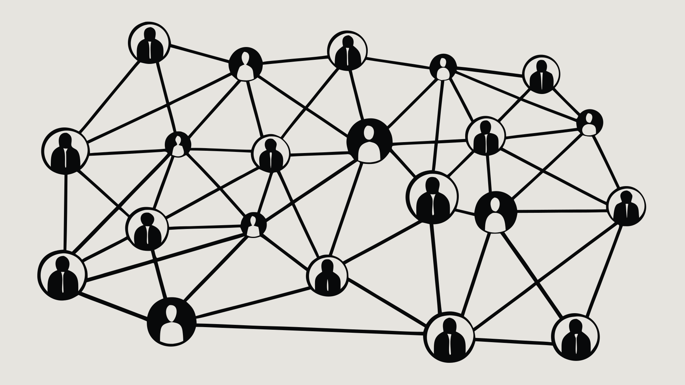
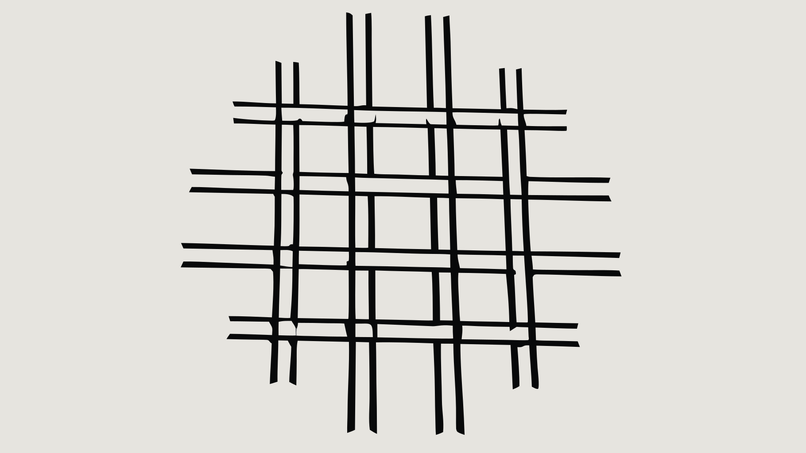
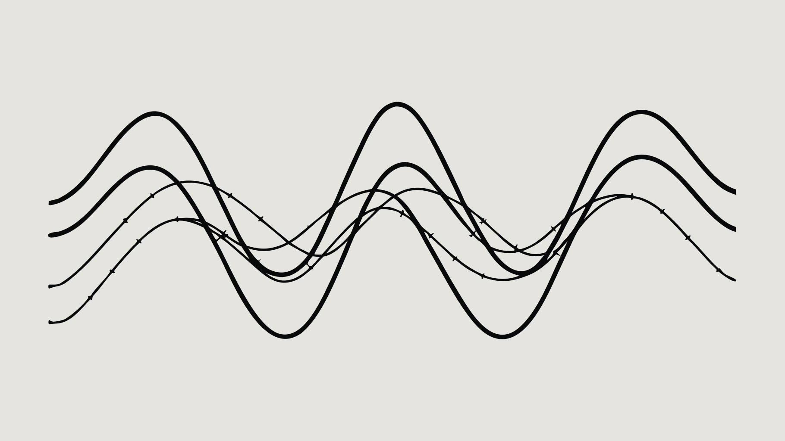

substyle: line_art, обновлённый negative_prompt (заблокированы 3D / pipes / engraving / hatching / decorative ornament). Промпты — короткие, dataviz/math язык, никаких pipelines/blueprint/architectural.



Кредиты Recraft закончились (probe-D упал на not_enough_credits). 3 из 4 успели до лимита. Если нравится один из A/B/C — буду масштабировать в нём после top-up. Если нет — скажи в каком направлении ещё попробовать (другие dataviz-метафоры) или оставляем то что было.